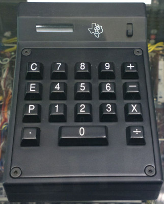
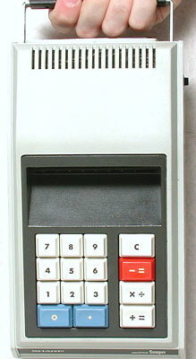
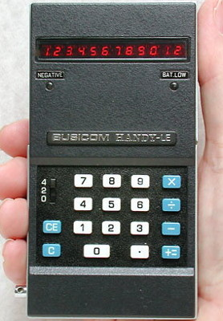

Portable Calculators
Portability and efficiency were the next priorities.
- Cal Tech calculator
- Released in 1967 by Texas Instruments. Could perform the four standard arithmetic operations, print on paper, and was small enough to fit in one's hands. It still required a lot of power.
- Sharp's QT-B Micro Compet calculator
- Released in 1969. Portable and efficient enough to be powered by batteries.
- LE-120 "Handy" calculator
- Released by Busicom in 1971. Could fit in one's pocket.

1. Cal Tech

2. QT-B Micro Compet

3. LE-120 "Handy"